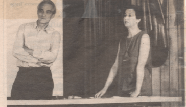
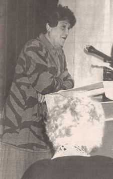
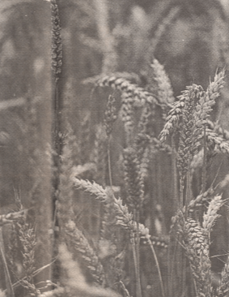
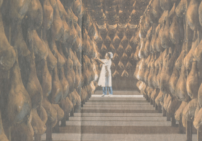
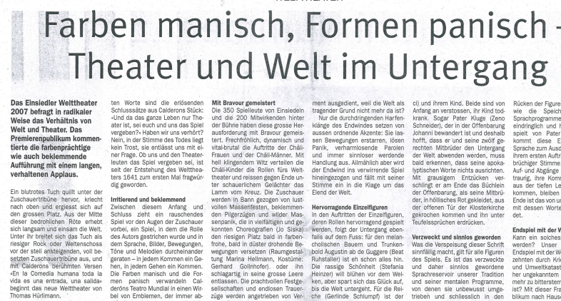

Publikationen
Publikationsliste
Publikationsliste (PDF)
Von hier aus gelangen Sie zu den PDFs der bereits bereitgestellten Aufsätze. Weitere Texte folgen.
Aufsätze
-  Völkermord (PDF) Der Artikel bespricht einen Vortrag von Claude Bavaud, der im Auftrag des Schweizerischen Katastrophenhilfekorps 1994 – 1995 in Ruanda war, über die Hintergründe des Völkermordes der Hutus an den Tutsis.
-  Solidarität (PDF) Der Artikel bespricht ein Referat der Zürcher Stadt- und Ständerätin Emilie Lieberherr, das sie anlässlich der „Gemeindewoche Arbeit“ zur wichtigen, aber unterschätzten Arbeit der Frauen gehalten hat.
-  Fortschritt (PDF) Der Artikel beschreibt ein Podiumsgespräch in Kloten zur Gentechnologie, in dem sich Befürworter und Gegner nicht annähern konnten.
-  Friaul (PDF) Dieser Reisebericht zeigt an einem Beispiel der Lebensmittelindustrie, wie sich das Friaul nach dem verheerenden Erdbeben von 1976 aufgerappelt und modernisiert hat.
-  Welttheater (PDF) Diese Besprechung würdigt Thomas Hürlimanns und Volker Hesses aussergewöhnliche Neuinszenierung des bekannten Welttheaters von Einsiedeln.